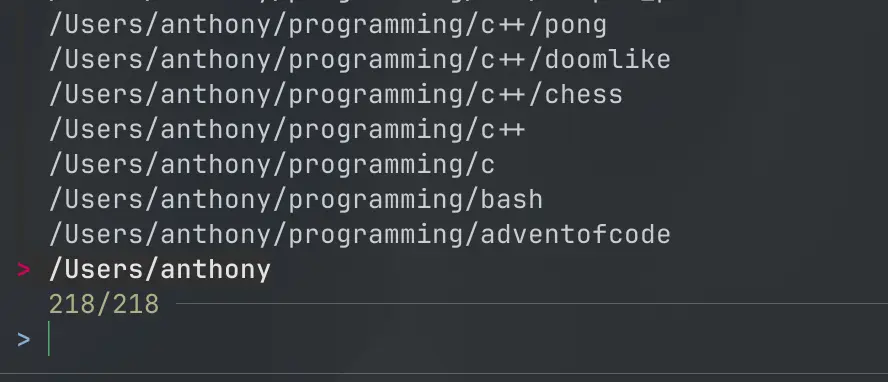

Website for University of Washington Tacoma student facilitators to find, create, and share worksheets.
Go, React, PostgreSQL, S3
A social and marketplace platform designed for university students to buy, sell, and trade wares safely and efficiently.
GithubTypescript, Node, React, PostgreSQL
An IOS application that integrates with Google My Maps, enabling users to create and edit maps with custom markers and geographic data.
Swift, SwiftUI
A native macOS client for Subsonic music servers, enabling users to browse and listen to their music collection.
Swift, SwiftUI
A command line tmux session management tool built with fzf integration, allowing users to quickly create and switch between tmux sessions for improved workflow and productivity.
GithubRust

A diagnostic tool using machine learning to analyze chest X-ray images and identify various respiratory illnesses.
Python, Flask, Tensorflow, Streamlit, PostgreSQL
Husky Watch is a full-stack application that provides interactive crime data visualization, heatmaps, and safety analytics for the University of Washington Tacoma campus.
GithubSvelte, Go, PostgreSQL